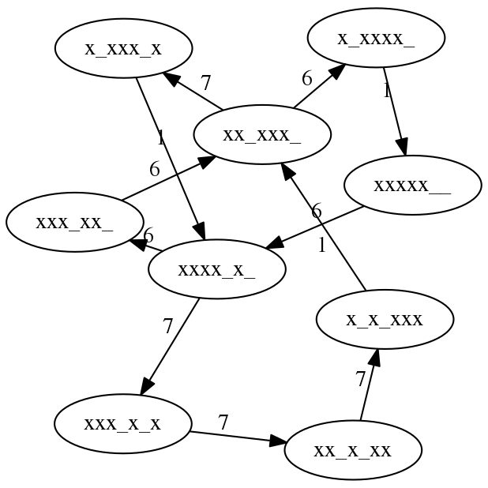
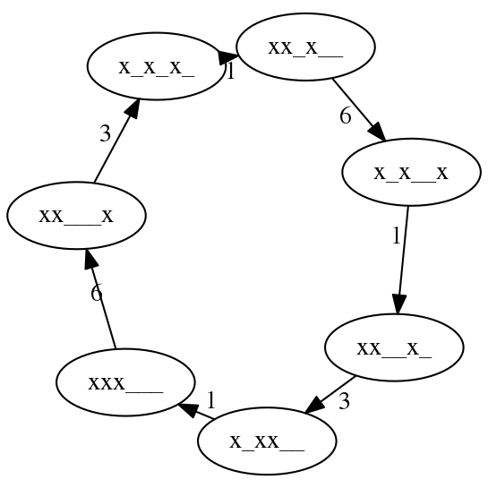
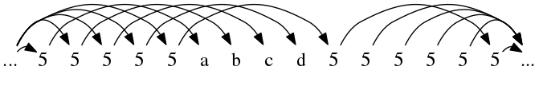
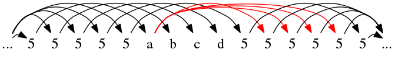
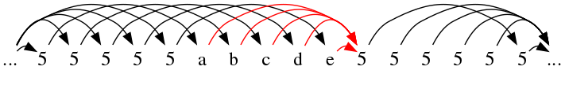
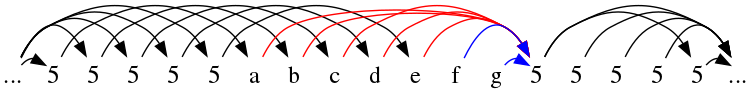
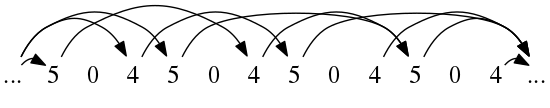
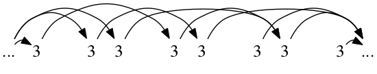

Intro
At EJC last year (2018), I came across Jack Boyce's siteswap questions, which can be found HERE! I'd highly recommend giving them a go. They start off doable, and at the end work up to a derivation of how many siteswaps of a given length there are.
I ended up getting a bit carried away, and writing some programs to visualize parts of the questions, and take some ideas further. The full source for generating the graphs can be found on my Github.
I wrote almost all of this at the time, but I'm only getting around to cleaning it up and posting it now… 9 months later.
q1
I am juggling \(868671\) with clubs (yeah, right). How many do I have?
The number of objects in a given siteswap is just the average value, I.e. The sum of the numbers divided by the length.
let ss = [8,6,8,6,7,1]
(sum ss) `div` (length ss)
Answer: 6
q2
I have a bowling ball that I can only throw as a site swap '\(3\)' throw. Which of the following patterns can I theoretically run, using the bowling ball in addition to 3 normal balls:
a) \(53\) b) \(6631\) c) \(633\) d) \(577131\)
This is a question about orbits. A siteswap throw is thrown it's value number of beats later (e.g. a \(6\) is thrown 6 beats later). Therefore we're looking for siteswaps which have a \(3\) every 3 beats (wrapping).
This is only c).
q3
You are doing a 4 ball fountain and decide you want to switch into 741, an excited state site swap. You can't just start throwing: 4444741741… Since the last fountain throw (4) will collide with the first 1 you do. Some connecting throws are needed. What is the shortest starting sequence for 741?
A 4 ball base fountain occurs in the base state of 4 balls, which can be written as:
4|xxxx
741 occurs in state:
7|xx_x__x 4|x_xx_x 1|xxx_x
Before the 7 is thrown, we're in state xxx_x, which is simply a \(5\)
away from the base state.
q4
You want to get back into the fountain, from 741. What is the shortest connecting (ending) sequence in this direction?
From xxx_x_ to xxxx___, we can throw a \(3\).
It's not a coincidence that the the transition into \(741\) (\(5\)) and out (\(3\)) together make a valid siteswap (\(53\)). The intuition here is that you can transition into any siteswap, repeat that siteswap any number of times, and transition back. That includes repeating it 0 times. Therefore the transition into and out of any siteswap must be, itself, a valid (ground state) pattern.
q5
Go from the 4 ball fountain to 714. What are the shortest connecting sequences (both directions)?
As before we can work out the state that 714 starts in.
7|x_xx__x 1|xxx__x 4|xx_xx
Before the 7 is thrown, we're in state \(xx\_xx\). This is where we need our transition to leave us. We can see it won't be possible to transition in a single throw, so lets look at transitions of length 2.
I.e. finding the throws a, b here:
4|xxxx a| b|xx_xx
For a and b, (and therefore the transition into the pattern) both \(55\) and \(64\) work.
As for the transition back, a \(2\) works. Without having to check, we know this will work because \(552\) and \(642\) are valid siteswaps.
q6
You are already doing \(741\) and want to switch directly into \(714\). What is the shortest sequence for doing so? [You could just concatenate the ending sequence found in (4) above and the starting sequence in (5), but this is not the shortest solution.]
Here, we're looking for the transition from \(xxx\_x\) to \(xx\_xx\). This is just a \(5\).
We can also see this by looking at the transitions we found into the siteswap. For \(741\) we found \(5\), and for \(714\) we found \(55\). The difference here is just an extra \(5\).
q7
Is the trick \(66671777161\) simple? If not, which portion of the pattern can be repeated within the larger trick?
Is the trick \(6316131\) simple? If not, which portion can be repeated?
Here 'simple' (more commonly 'prime') refers to simple cycles in graph theory. These are siteswaps where each state is only visited once. We could find answers by working out all the states in each siteswaps, and look for duplicates. If there's any duplicate, then the siteswap isn't simple, and the throws between these duplicated states can be repeated. This can be done by brute force as follows by generating the table by hand. I'm too lazy to do this so I'll write a much longer program to do it instead… :thinking:
-- Function mapping from current state to next state.
-- E.g. throw "xxxx___" 5 gives "xxx_x__"
throw (x:xs) n = before ++ 'x' : after
where (before, _:after) = splitAt (n-1) (xs ++ "_")
-- Juggle pattern 100 times, then take the next (length ss) state changes.
-- This creates a list of maps between starting state
-- (say, xxxx___), throw (e.g. 5), and resulting state (xxx_x__)
grEdges ss = take (length ss) $ drop (100 * length ss)
$ scanl nextEdge ([], 0, emptyState) (concat . repeat $ ss)
where nextEdge (startState, _, endState) s = (endState, s, throw endState s)
emptyState = replicate (maximum ss) '_'
-- Print table for a given siteswap
printTable ss = putStrLn $ unlines $ map showSt (grEdges ss)
where showSt (_, s, state) = (show s) ++ "|" ++ state
Then, we can get the tables for both siteswaps we're interested in.
> printTable $ map digitToInt "66671777161"
1| xxxxx__
6| xxxx_x_
6| xxx_xx_
6| xx_xxx_
7| x_xxx_x
1| xxxx_x_
7| xxx_x_x
7| xx_x_xx
7| x_x_xxx
1| xx_xxx_
6| x_xxxx_
> printTable $ map digitToInt "6316131"
1| xxx___
6| xx___x
3| x_x_x_
1| xx_x__
6| x_x__x
1| xx__x_
3| x_xx__
66671777161
Here, there are two states that occur more than once. I've marked the pairs here as a and b. This means you can juggle the patterns between the As (I.e. 6671, and 7771616), and Bs (717771, and 61666)
1| xxxxx__ 6| xxxx_x_ A 6| xxx_xx_ 6| xx_xxx_ B 7| x_xxx_x 1| xxxx_x_ A 7| xxx_x_x 7| xx_x_xx 7| x_x_xxx 1| xx_xxx_ B 6| x_xxxx_
6316131
Here, this siteswap has no duplicated states, and is therefore prime.
1| xxx___ 6| xx___x 3| x_x_x_ 1| xx_x__ 6| x_x__x 1| xx__x_ 3| x_xx__
We can also use this to make a graph of these patterns. Graphing them using graphviz. This code prints into pretty much the Dot format used by graphviz, and the resulting graphs are shown below.
printGraph ss = putStrLn $ unlines $ map showSt (grEdges ss)
where showSt (startSt, s, endSt) = " " ++ startSt ++ " -> " ++ endSt
++ " [label=\"" ++ (show s) ++ "\"]"

Figure 1: Siteswap map for 66671777161. We can see the two states we found (labeled A and B) before in the nodes with 2 input and output edges.
Here we can see the results for our first part, 66671777161. Any closed loop in this is a valid siteswap, which are (hopefully) just the 4 we found before. Pretty neat!

Figure 2: Siteswap map for 6316131
As expected, \(6316131\) is prime so the graph is simply a loop with no repeated states.
q8
There is 1 ground state 5 ball trick of length 1 (5), 2 of length 2 (55, 64), 6 of length 3 (555, 564, 645, 663, 744, 753), 24 of length 4, 120 of length 5, and 720 of length 6. Clearly the pattern is N = L!, which is a big hint that L elements are being permuted. What L things are permuted by ground state site swaps of length L? (Bear in mind that L is not the number of balls.)

Figure 3: A continuous 5 ball cascade, breaking for a period 4 siteswap, before resuming.
Looking at siteswaps of length 4, for example. Here, we can assign a, b, c, d to whatever we want, but we're limited with what we can connect to. The question becomes: How many ways can we connect up the arrows to form valid patterns.
Any way that we can connect up these, so that every node has 0 or 1 throws going to it, and the same number of throws leaving it will be a valid pattern.
We can look at each throw in turn, and see what it's possible to connect it to. a already receives a throw, so it can't be a 0. It can't connect to b, c, d, or the following 5 because they already have arrows connecting to them.

Figure 4: There are 4 possible values for a, shown in red.
Here, in red, are the possible throws from \(a\). \(a \in \{5,6,7,8\}\). It can be seen that b, c, and d, can also throw to these same 4 positions. However, only one can throw to each. We need to choose an ordering for these 4 throws to land. The number of ways to order 4 objects is 4!. By this logic, we can see how it'll be \(l!\) for any number of throws (until we start getting 0s… See next q).
q9
There are not 7! = 5040 ground state 5 ball patterns of length 7, as the above pattern would suggest (the actual number is around 4300). Why does the pattern break down? Can you calculate (not by brute force!) how many ground state patterns there are for L = 7,8,9,…?
This is due to there being 0s in the pattern. As before we can connect these arrows in any way, but sometimes in later throws we won't have a ball to throw.
Another way of approaching the previous question is to reverse it. Instead of looking at the throws being made at a point, look instead at the number of places the throws can come from. look at the throws landing at a point. a,b,c,d,e already have their throws chosen, so we're looking at the subsequent 5 throws. Since we require a ball to land at each of these times, we can just times together all the ways these arrows could be directed.

Here, there are a choice of 5 throws that can land at this time. For the following throw, there are only 4 left, and after is 3 etc. This approach leads us to the same answer as before: n!.
Where this falls apart however is for longer sequences..

Figure 6: f or g could be a 0, and so the arrows in blue may not be possible. This is the problem with our current method.
Here, this method falls apart - we don't know if f or g will even 'contain' a ball for us to throw. Because of this, if we were to continue the previous method - we'd overestimate the number of siteswaps of any given length.
However, having a 0 in a pattern is pretty much the same as inserting a space into a shorter siteswap. If we were able to work out the number of siteswaps of a shorter length with no 0s, and then multiply it by the number of ways we could 'insert' a 0 into that siteswap… We'd be able to work out the number of siteswaps of any given length despite there being 0s.
Here's an example of this insertion… We can create all siteswaps with 0s similarly by adding gaps into siteswaps without 0s.


Figure 8: Siteswap 504 has exactly the same arrow placement as 33, but with an added 0. All siteswaps with 0s have exactly one siteswap without 0s they map to.
So with this in mind, we can calculate the total number of siteswaps of length \(L\) by:
\(\sum_{l=1}^{L}\) (arrow permutations of length \(l\)) \(*\) (ways to insert \(L-l\) gaps into a siteswap of length \(l\))
Arrow permutations:
To work out the permutations of length l, we can use the method we had before. We go through the catches, and work out where the throw could've come from. Now that we've no 0s, any unassigned throw before can be used.
The first \(n\), where \(n\) is the number of balls are already determined by the incoming cascade throws. After that, we have n throws that can land at any point.

Figure 9: The n (n = 5 here) throws that could arrive at f. After picking the throw to arrive at f, we'll still have n choices for g - since f is now a possible source.
As long as the pattern is going, we have \(n\) places the throw could've been made. We go through the siteswap from left to right, picking each throw source in turn. Therefore, the number of possible sources remains the same - \(n\).
From the previous question, for \(n\) throws following the pattern we have one less choice each time, totalling \(n!\).
The total number of arrow permutations therefore is
\[ p = \begin{cases} l! & l <= n \\ n! * n^{l-n} & otherwise \end{cases} \]
Since we already know how many ground state siteswaps there are for \(l <= n\), (I.e. l!) we'll ignore this case for now.
Gap insertion
Given a siteswap of length \(l\) with no gaps, we're looking to insert them so as to end up with one of length \(L, L >= l\).
Another way to phrase this is to say given a sequence of length \(L\), we have to choose positions for the \(L-l\) gaps. We can't choose the first \(n\) places though, since the siteswap is ground state.
This is just \({L-n \choose L-l}\), as long as \({ L-n \geq L-l } \implies { l \geq n }\). There is no way to insert gaps into a siteswap that's shorter than the number of balls.
Putting it all together:
Lets insert what we have into the equation.
\(\sum_{l=1}^{L}\) (arrow permutations of length \(l\)) \(*\) (ways to insert \(L-l\) gaps into a siteswap of length \(l\))
Since there are 0 ways to insert gaps into siteswaps where \(n < L\), and we already know from the previous question that the number of siteswaps in this case is \(L!\), we'll omit this case and come back to it.
\[ s(L, n) = \sum_{l=1}^{L} \bigg[ \begin{cases} l! & l <= n \\ n! * n^{l-n} & otherwise \end{cases} * {L \choose l} \bigg] \]
\[ = \sum_{l=n}^{L} \bigg[n! * n^{l-n} * {L-n \choose L-l} \bigg], l \geq n \]
Which gives us the number of ground state siteswaps for a given number of balls (\(n\)) and length (\(l, l \geq n\))! We can test it to get an answer for how many siteswaps of length 7 there are:
\[ s(7, 5) = \sum_{l=5}^{7} \bigg[5! * 5^{l-5} * {2 \choose 7-l} \bigg] = 5!(5^0*1 + 5^1*2 + 5^2*1) = 4320 \]
Simplify
We can simplify this formula a lot further! First taking \(n!\) out side the sum.
\[ = n! * \sum_{l=n}^{L} \bigg[n^{l-n} * {L-n \choose L-l} \bigg] \]
Substitute \(k+n = l\) \[ = n! * \sum_{k=0}^{L-n} \bigg[n^{k} * {L-n \choose L-k-n} \bigg] \]
Next, substitute \(L-n = d\) \[ = n! * \sum_{k=0}^{d} \bigg[n^{k} * {d \choose d-k} \bigg] \]
Then we have: \[ { d \choose d-k } = \frac{d!}{k!(d-k)!} = { d \choose k } \]
\[ \therefore s(l, n) = n! * \sum_{k=0}^{d} \bigg[n^{k} * {d \choose k} \bigg], l \geq n \]
This can be simplified with the binomial theorem identity, with n = d, a = 1, b = n. \[ \sum_{i=0}^{n} {n \choose i} a^{n-i}b^{i} = (a+b)^n \]
\[ \therefore s(L, n) = n! * (n+1)^d \]
And reverting the substitutions \[ \therefore s(L, n) = n! * (n+1)^{(L-n)} \]
And adding back in the case for l <= n. \[ \therefore s(L, n) = \begin{cases} l! & l <= n \\ n! * (n+1)^{L-n} & otherwise \end{cases} \]
Which… FINALLY gives us the the answer! Phew!